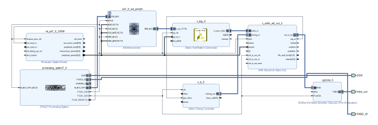

基于 PYNQ-Z2 的 HDMI 开发系列 01 - 输出测试图
本系列为 ZYNQ7000 视频处理的第一篇博客。该系列准备介绍一下 FPGA 上的视频处理流程。
创建 Block Design

双击 ZYNQ7 处理器系统 IP 进行配置。在“Clock Configuration”部分的“PL Fabric Clocks”下,启用 FCLK_CLK1 并将其时钟频率设置为 40 MHz。
添加 Video Timing Controller (VTC) IP 并双击打开其配置 GUI。
在“Detection/Generation”标签中，单击“Include AXI4-Lite Interface”并取消单击“Enable Detection”。
在“Default/Constant”标签中，将视频模式设定为 1280x720p。
双击 rgb2dvi IP 进行配置。将 TMDS 的时钟范围更改为“<80 MHz (720p)”，然后单击“OK”。
管脚约束
略。官网有文档：https://www.tulembedded.com/FPGA/ProductsPYNQ-Z2.html
然后生成 Bitstream, 导出包含 Bitstream 的工程。
软件部分
从 Vivado 启动 Vitis, 并选择我们刚刚导出的工程，创建一个 Helloworld。
修改代码
1 |
|
编译并运行，此时会把 Bitstream 下载到 FPGA。
观察现象
串口会输出，此时显示器会显示彩条的 Test Pattern。